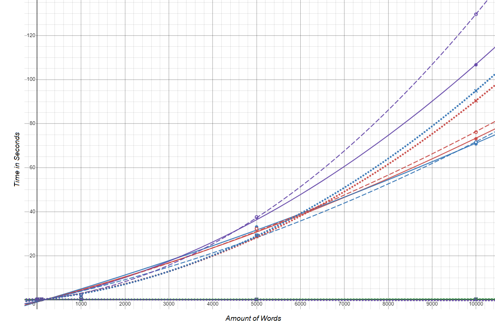
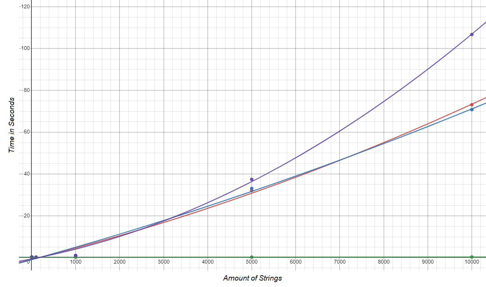
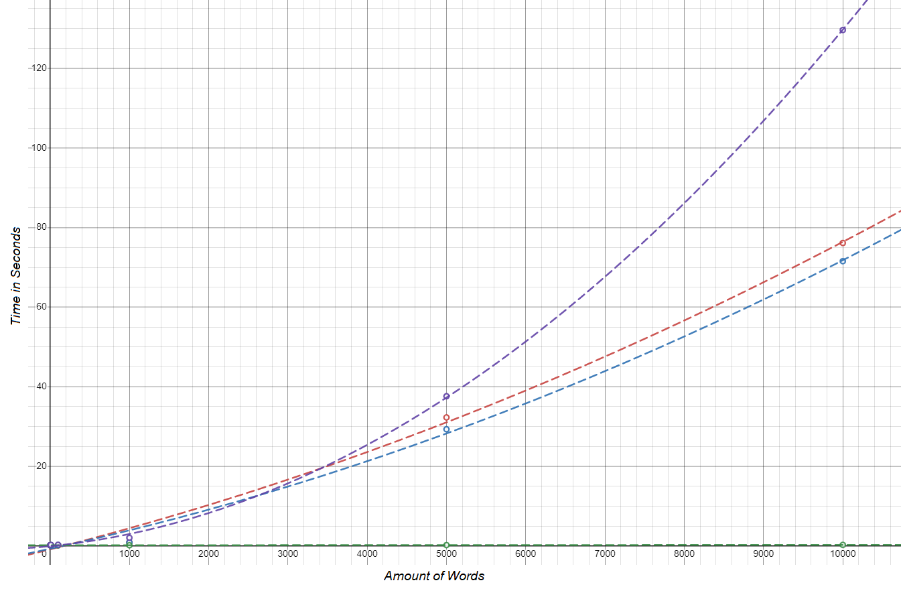
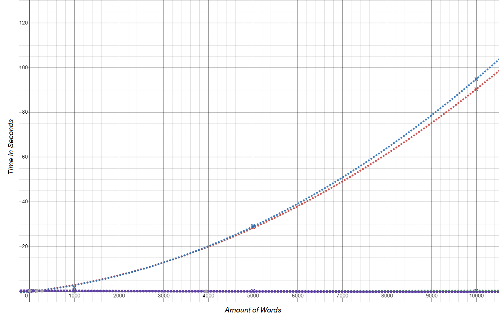

Link to Github Repository
Link to Spreadsheet
Link to Summary Spreadsheet
People Who Contributed: Zachary Chandler, Devon Leerssen, Sophia Tran, and Hoang Nguyen
Links to Github Repositories
Insertion Sort
Selection Sort
Quicksort (my group project)
Bubble Sort
Spreadsheets
Timings of Various Sorts With Various Types of Groups of Strings
Key
| Bubble | Selection | Insertion | QuickSort |
| Solid Line: Random Strings | Dashed Line: Reverse Strings | Dotted Line: Ordered Strings |
To clarify, each line in the graph does not perfectly cross every point, it is a quadratic regression line of best fit for each type of sort. Each of these sorting algorithms show a very strong resembelence to a quadratic equation on the graph. when caculating the line of best fit, the value R, which is a variable describing the the accurracy of the graph, turned out to be .99 in almost every case, and this is out of 0-1. Since these equaions are so closely accurate to the data points on the graph, the equations can be used to describe how long sorting algorithms would take for a certain amount of strings. For example, according to the line of best fit, my insertion sorting algorithm should take about 45 min to complete, way surpassing the 5 min time out on the shell.
This graph is a bit cluttered, so I created graphs for each type of grouping of strings.
Random
With random sorts, quicksort just absolutely demolishes the other sorts. Looking at the random sorts is a good way to test an algorithm's efficiency because random is usually what algorithms are sorting.
Reverse Ordered
 Some sorts struggle with reverse order more than others, specifically bubble sort, because bubble sort speeds up if some strings happen to already be in order.Ordered
Interestingly, Insertion and Selection took longer to perform the sort than normal, and I don't know why that is. What I do know, is that bubble sort only has to go through the array once, so no swaps are made and the algorithm is insanely fast. The line for bubble sort in the ordered case is actually linear because it makes no swaps so it′s solely based on the amount of strings.
Summary
Based on these graphs, each sort's time taken to sort an array of strings is related quadratically with the number of strings in the array. This is proven in my graphs with the quadratis line of best fit resembling very closely to the actual data points from my testing.